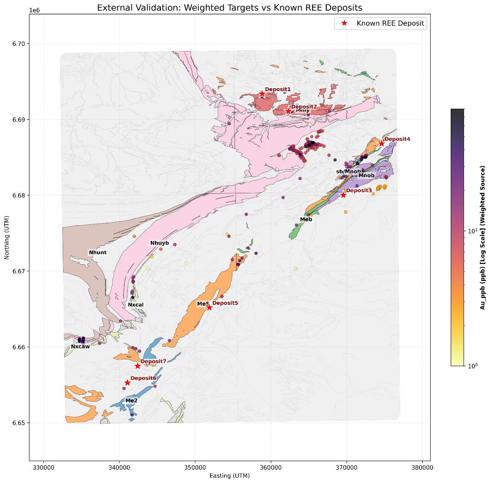
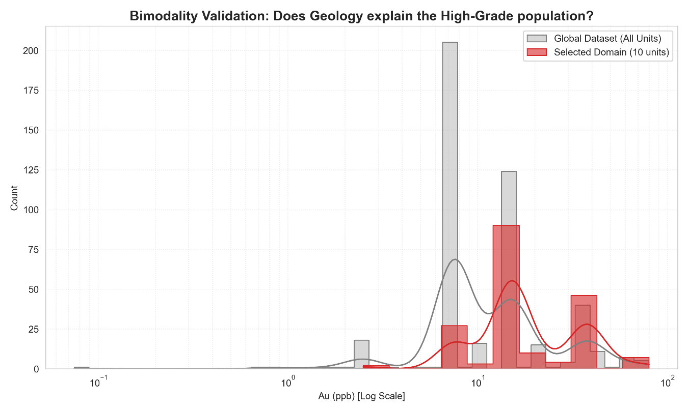
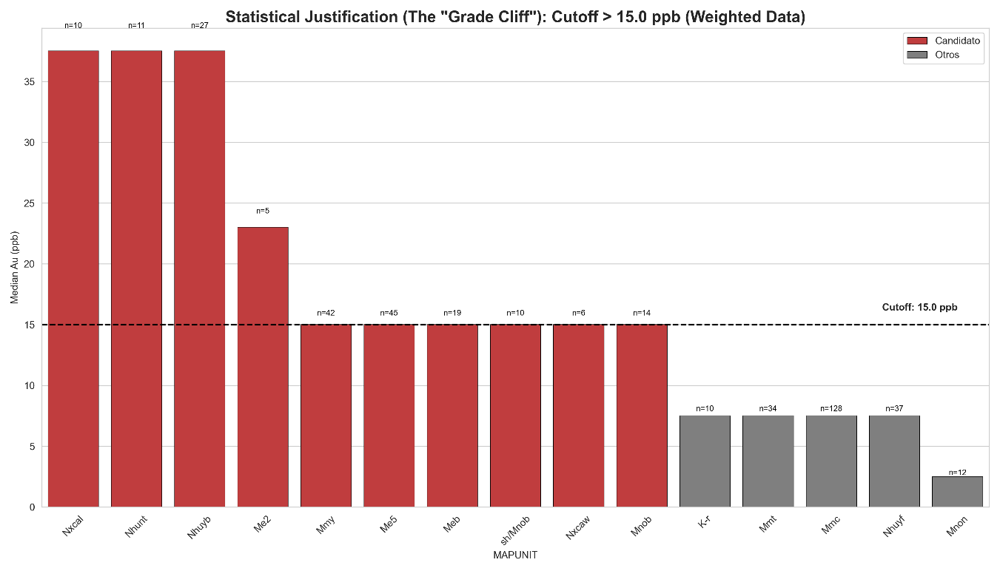

Capítulo 5 · corte 15,0 ppb · Nxcal/Nhunt/Nhuyb · ~48 muestras → modelo global
La geología manda, la estadística limita
Las anomalías viven en unidades de basamento concretas, pero estratificar con n<50 destruiría la variografía: se elige el modelo global sabiendo lo que cuesta.
La geología decía «estratifica» y la estadística decía «no puedes». Tres unidades de basamento, Nxcal, Nhunt y Nhuyb, concentran el oro con medianas de 36 a 37 ppb frente a un corte de 15,0 ppb. Y juntas suman unas 48 muestras por encima de ese corte, cuando un variograma fiable pide entre 50 y 100 pares como mínimo. Se eligió el modelo global sabiendo lo que costaba, y este capítulo es la historia de esa decisión.
En este capítulo: la hipótesis de que la bimodalidad es geología, la validación que la confirmó, el argumento de tamaño de muestra que la volvió inutilizable para modelar, y lo que se salva de todo eso.
La hipótesis
La bimodalidad del capítulo 3 separaba dos poblaciones de oro alrededor de unos 15 ppb. La premisa de esta fase era sencilla y de consecuencias grandes: que esa separación no fuera un artefacto estadístico sino la expresión de una heterogeneidad geológica real. Unidades litoestratigráficas distintas tendrían comportamientos distintos del oro, y la firma bimodal serviría para estratificar por dominios antes de la variografía y el kriging.
Tenía todo a su favor. En geología económica, las discontinuidades litológicas suelen coincidir con cambios de comportamiento geoquímico, y respetar las fronteras entre dominios es un principio fundacional de la estimación de recursos.
La validación: el oro sí vive en rocas concretas
De las 1.024 muestras disponibles, se aislaron las 425 con contenido de oro medible, el 41,5 %, y se superpusieron al mapa geológico.

El resultado fue visualmente contundente: las muestras de alta ley se asocian a unidades concretas, en particular Nxcal, Nhunt y Nhuyb, con medianas muy por encima de los 15,0 ppb. Y la validación externa contra los depósitos conocidos apuntaba en la misma dirección.

El dominio restringido de diez unidades tiene una concentración marcadamente mayor de muestras de alta ley: mediana de unos 23 ppb para Nxcal, Nhunt y Nhuyb combinadas, mientras el resto queda centrado mucho más abajo.

El análisis del «acantilado de ley» lo hizo aún más nítido: Nxcal, Nhunt y Nhuyb superan el corte con medianas de 36 a 37 ppb y conteos de n = 10 a n = 27, mientras las demás unidades se agrupan entre 7 y 15 ppb con poblaciones mucho mayores. La separación parecía estadísticamente robusta.
Un ejemplo de juguete antes del argumento
Un variograma se construye con pares de muestras: cada par aporta una distancia y una diferencia de valores, y los pares se agrupan por distancia para ver cómo crece la diferencia con la separación. Con 10 muestras hay 45 pares posibles. Repártelos en intervalos de distancia de 240 m a lo largo de varios kilómetros y tocan a dos o tres pares por intervalo. Cada punto del variograma sería el promedio de dos o tres diferencias: eso no es una curva, es ruido con forma de curva.
Por eso la práctica geoestadística convencional exige 50 a 100 o más pares para estimar semivarianzas robustas, y por eso el kriging depende de una cobertura espacial adecuada para no sesgar ni inflar la varianza de los bloques.
El obstáculo: el tamaño de muestra
Los tres dominios de alta ley contenían, en conjunto, unas 48 muestras por encima de 15,0 ppb. Un número apenas adecuado para un variograma experimental con sentido, y menos aún para generar predicciones interpoladas por kriging sobre un dominio regional.
La estratificación habría fragmentado las ya modestas 425 muestras con oro medible en subpoblaciones de 20 a 50 observaciones por dominio. Una reducción que compromete de raíz la potencia estadística y la representatividad espacial de cualquier variografía o kriging posterior. La ganancia en coherencia geológica se pagaría con una pérdida inaceptable de robustez analítica y fiabilidad predictiva.
La resolución: el modelo global
Se tomó la decisión de abandonar el enfoque estratificado por dominios, pese a su atractivo geológico, y proceder con el análisis geoestadístico integrado sobre la población completa de muestras medibles. Una priorización deliberada de la suficiencia estadística sobre la estratificación geológica, defendible en un contexto de evaluación exploratoria de recursos, donde las estimaciones preliminares equilibran geología y datos disponibles.
El análisis de bimodalidad no se desperdició. Cumplió su función como validación: confirmó que las anomalías de oro tienen una coherencia espacial y geológica genuina, descartando que fueran puro azar. Pero en vez de usar ese hallazgo para partir el archivo, se conservó el marco global como la vía más defendible para caracterizar la mineralización regional a la escala que los datos permiten.
Una nota sobre el «sill global»
En las figuras de los próximos capítulos aparece una línea llamada sill global. No es un parámetro teórico de un modelo ajustado: es la varianza muestral del oro en log10, fijada en 1,81, usada como referencia fija. En condiciones de estacionariedad el variograma debería estabilizarse cerca de ese valor; cuando lo supera con claridad a grandes distancias, mide cuánto se aparta el dato de esa expectativa y delata una tendencia regional que habrá que tratar.
Lo que queda establecido
El oro vive en rocas concretas, Nxcal, Nhunt y Nhuyb, y la bimodalidad es geología. Pero con unas 48 muestras repartidas en tres dominios no hay variograma que aguante, y el modelo global se eligió con el precio a la vista. El siguiente capítulo construye ese variograma global, y la tendencia regional que la línea de 1,81 va a delatar.